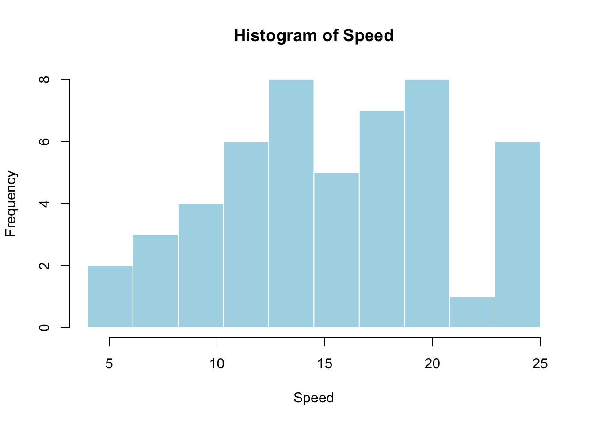
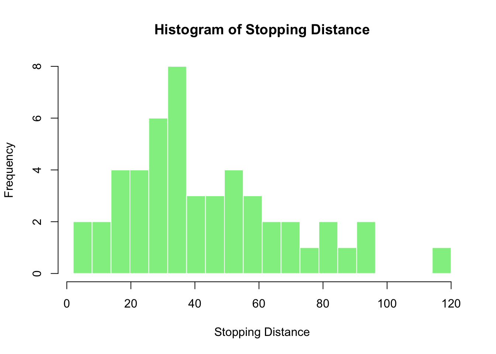
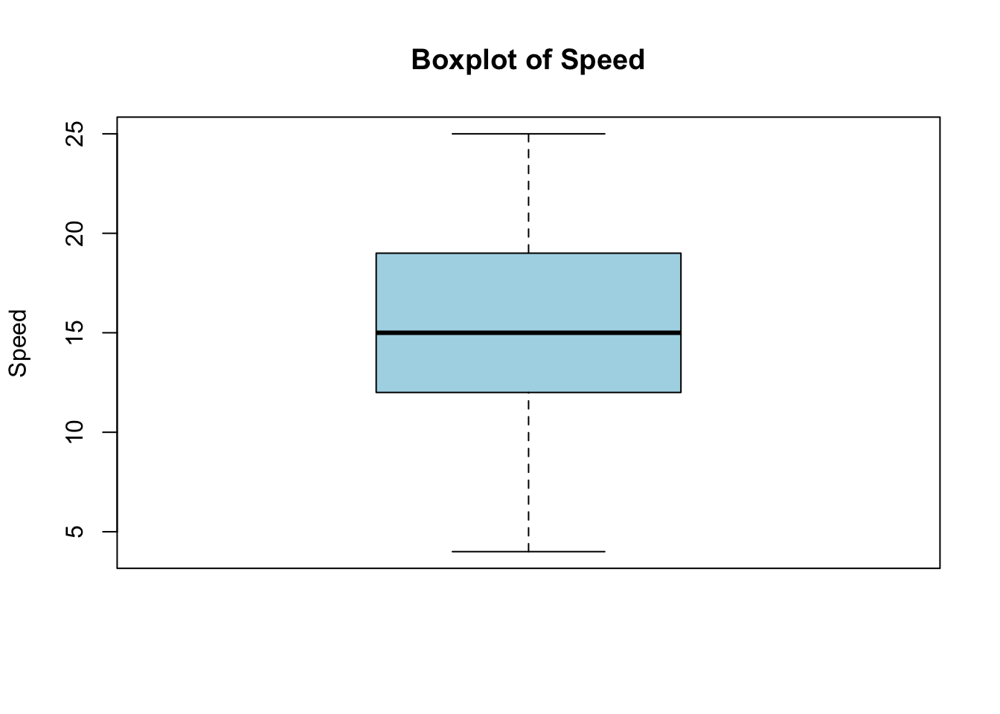
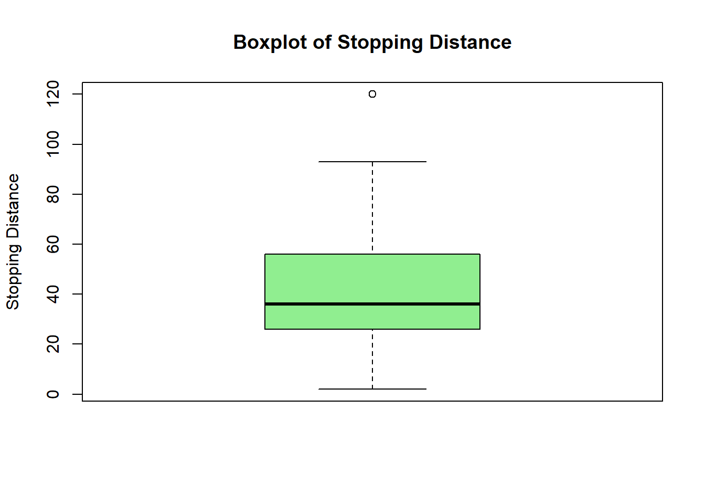
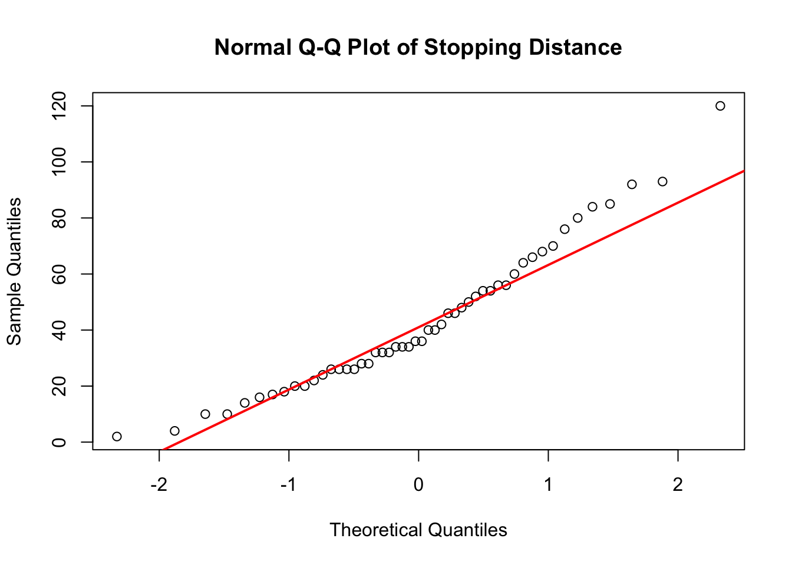

head(cars) speed dist
1 4 2
2 4 10
3 7 4
4 7 22
5 8 16
6 9 10Yuhan Ding
We’ll look at data frame and plotting in much more detail in later classes. For a preview of what’s to come, here’s a very basic example.
For this example we’ll use a very simple dataset. The cars data comes with the default installation of R. To see the first few rows of the data, just type head(cars).
summary() to summarize cars. Report the minimum, maximum, mean, and median of both speed and dist. (10 points) speed dist
Min. : 4.0 Min. : 2.00
1st Qu.:12.0 1st Qu.: 26.00
Median :15.0 Median : 36.00
Mean :15.4 Mean : 42.98
3rd Qu.:19.0 3rd Qu.: 56.00
Max. :25.0 Max. :120.00 The minimal value of
speedis 4, maximal value ofspeedis 25, mean value ofspeedis 15.4, and meadian value ofspeedis 15. The minimal value ofdistis 2, maximal value ofdistis 120, mean value ofdistis 42.98, and meadian value ofdistis 36.
speed and dist (5 points)[1] 27.95918[1] 5.287644[1] 664.0608[1] 25.76938The variance of
speedis 27.9591837. The standard deviation ofspeedis 5.2876444. The variance ofdistis 664.0608163. The standard deviation ofdistis 25.7693775.
dist for observations where speed is greater than 12 and less than 19. (5 points)[1] 44.7[1] 18.61833The average of
distwhenspeedis greater than 12 and less than 19 is 44.7. The standard deviation is18.6183.
speed with 10 breaks. Please illustrate your observation from the output. (5 points)
Most speeds fall between approximately 10 and 20, with the largest concentration near the middle of this range. The distribution is roughly unimodal and does not appear to be strongly skewed.
dist with 20 breaks. Please illustrate your observation from the output. (5 points)
Most stopping distances are relatively small or moderate, while a few observations have much larger distances. The distribution is right-skewed.
boxplot function to create a boxplot of speed. Briefly describe the center, spread, and any possible outliers. (5 points)
[1] 4 12 15 19 25numeric(0)The median speed is 15. The middle 50% of the speeds extend from 12 to 19, so the IQR is 7. No observations are identified as possible outliers by the boxplot rule.
boxplot function to create a boxplot of dist. Please illustrate your observation from the output. (5 points)
[1] 2 26 36 56 93[1] 120The median stopping distance is 36. The middle 50% of the distances extend from 26 to 56, so the IQR is 30. The value 120 is shown as a possible outlier above the upper whisker. The longer upper portion of the plot is consistent with a right-skewed distribution.
qqnorm and qqline to investigate whether dist is approximately normally distributed. Briefly explain your conclusion. (5 points)
If
distwere approximately normally distributed, the points would lie close to the reference line. The points deviate noticeably from the line, especially in the upper tail. Together with the right-skewed histogram and the high outlier, this suggests thatdistis not approximately normally distributed.
X: the number of automobile accidents per year in Illinois.
Discrete
Y: the length of time to play 18 holes of golf.
Continuous
M: the amount of milk produced yearly by a particular cow.
Continuous
N: the number of eggs laid each month by a hen.
Discrete
Takes on only countable values
Takes on any value in an interval
Has a probability density function
A
It can only take integer values
It is described using a probability mass function (PMF)
It can take an infinite number of values within a given range
C
0
\(c^2\)
\(E[X]\)
\(E[X^2]\)
A
\(E[X]\) is always equal to the sample mean
\(E[X]\) can be estimated by the sample mean when the sample size is large
\(E[X]\) is always equal to the variance of X
\(E[X]\) is always an integer
B
The mean is greater than the median
The median is greater than the mean
The data is symmetric
The data has no outliers
A
Outliers are always errors in the data
Outliers are represented by dots or asterisks outside the whiskers
Outliers are included in the box
Outliers are not shown in a boxplot
B
The fraction of the cups will contain more than 224 milliliters is 0.0547993.
The probability that a cup contains between 191 and 209 milliliters 0.4514938.
Below 189.8826537 we get the smallest 25% of the drinks.
qnormqnorm to find the critical values \(z_{0.1}\). (5 points)\(z_{0.1}\) is 1.2815516.
\(z_{0}\) is 1.6448536.
Here \(z_{0}\) is \(z_{0.05}\), which should be larger than \(z_{0.1}\). Because \(P(Z \le z_{0.05}) = 1-0.05 = 0.95 > 0.9 = 1-0.1 = P(Z \le z_{0.1})\).